Première générale et technologique · Français · Poésie et récit, du XXe au XXIe siècle
Perec et Ponge
L'Homme et l'objet. Du secret des choses au vertige de la consommation.
Niveau Première. Cette page est la version pour le français de la classe de Première générale et technologique (objets d'étude : la poésie, le roman et le récit ; préparation au bac de français).
Terminale spécialité HLP · Préparer la classe prépa littéraire. Une version Terminale, pour la spécialité Humanités, littérature et philosophie, destinée à préparer la classe prépa littéraire et l'université, sera proposée à côté de celle-ci.
Télécharger cette séquence :
PDF ·
Word (.docx) ·
LibreOffice (.odt).
Vous pouvez utiliser et adapter ces documents en citant leur autrice, sans usage commercial, et en partageant vos versions dans les mêmes conditions.
CC BY-NC-SA 4.0
Problématique. Comment la littérature du XXe siècle s'empare-t-elle des objets quotidiens et banals pour interroger notre rapport au monde, entre célébration matérielle et aliénation moderne ?
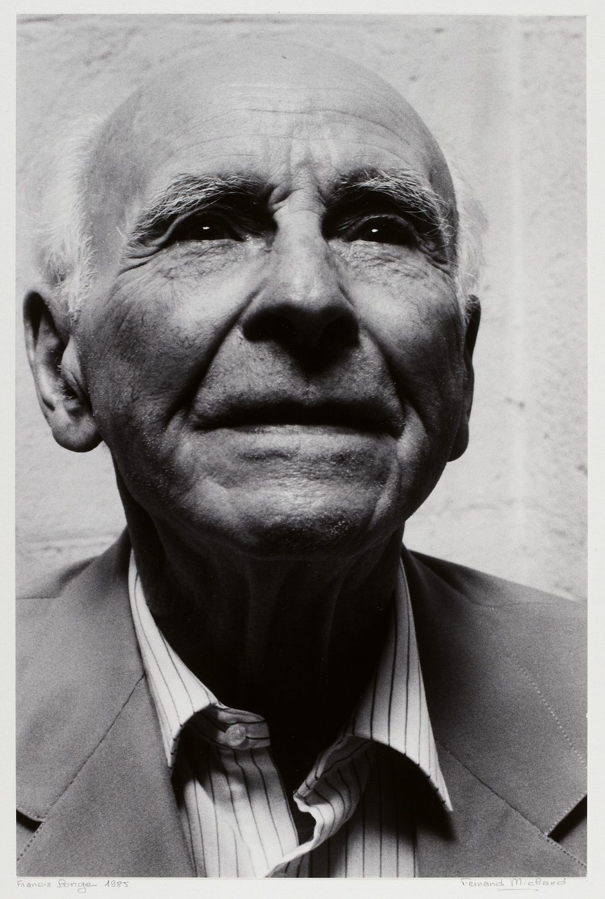
Francis Ponge, photographié par Fernand Michaud en 1983. Fernand Michaud, domaine public, Wikimedia Commons.
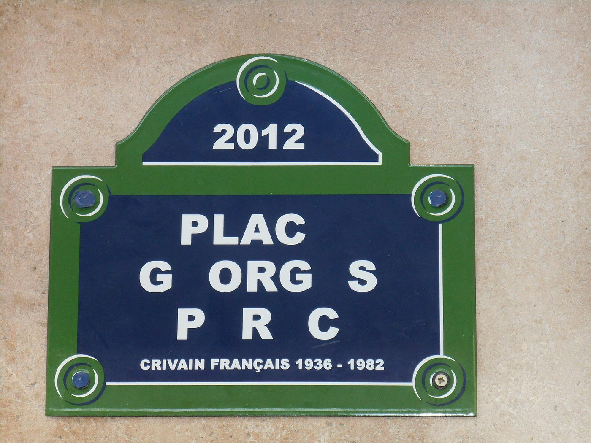
Plaque de la place Georges Perec, Paris 20e. Les lettres E ont disparu, comme dans le roman La Disparition. Aucun portrait photographique de Perec n'a été trouvé sous licence libre. Photo : Parisette, CC BY-SA 3.0, Wikimedia Commons.
Gustave Caillebotte, Fruits sur un étalage, vers 1881 à 1882, huile sur toile, 76,5 × 100,6 cm, Museum of Fine Arts, Boston. Domaine public. Les fruits reposent dans des caissettes et du papier : le monde des halles où Ponge ramasse son cageot. Voir le tableau sur Wikimedia Commons.
Fiche d'identité
Niveau
Niveau Première. Première générale et technologique, français. Environ 20 heures, dix séances et deux évaluations.
Objet d'étude principal
La poésie du XIXe siècle au XXIe siècle : le poème en prose de Ponge.
Objet d'étude associé
Le roman et le récit du Moyen Âge au XXIe siècle : Les Choses de Perec, et ses récits de l'ordinaire.
Œuvres
Francis Ponge, Le Parti pris des choses (1942), Le Savon (1967). Georges Perec, Les Choses (1965), Espèces d'espaces (1974), Tentative d'épuisement d'un lieu parisien (1975), Je me souviens (1978).
Lectures cursives
Le Parti pris des choses en entier (un recueil court) ou Les Choses en entier (environ 150 pages), au choix de l'élève, pour la seconde partie de l'oral.
Prolongements
Roland Barthes, Mythologies (1957), « Le plastique » ; Raymond Queneau, Exercices de style (1947) ; Annie Ernaux, Regarde les lumières mon amour (2014), journal d'un hypermarché.
Le fil rouge de la séquence : un mot qui change de sens
En 1942, Ponge termine « Le Pain » en disant que le pain doit être un objet « de consommation » : on le mange, il nourrit. En 1965, Perec écrit l'histoire d'un couple prisonnier de la « société de consommation » : on achète, et l'on n'est jamais rassasié.
Entre les deux livres, le même mot a basculé de la bouche au magasin. Toute la séquence suit ce glissement : de l'objet qu'on connaît à l'objet qu'on désire, puis à l'objet dont on se souvient.
Objectifs
Lire
Écrire
Dire
Langue
Conduire une lecture linéaire mouvement par mouvement. Comparer deux poétiques de l'objet : la définition-description et l'inventaire. Relier un texte à son contexte (guerre, Trente Glorieuses, Oulipo).
Rédiger un commentaire et une dissertation. Écrire « à la manière de » pour comprendre un style de l'intérieur.
Réussir une explication orale avec sa question de grammaire. Présenter et défendre une œuvre lue (seconde partie de l'oral).
Déterminants et valeur générique. Phrase nominale, énumération, asyndète. Valeurs du conditionnel et du présent. La négation (programme de l'oral).
Déroulé des séances
Séance
Support
Enjeu
Activité dominante
1. Entrée
Objets apportés par les élèves, Caillebotte
Qu'est-ce que regarder une chose ?
Écriture flash, oral
2. Ponge
« Le Cageot »
Définir la chose par la langue
Lecture linéaire 1
3. Ponge
« Le Pain »
Faire de l'objet un monde
Lecture linéaire 2
4. Ponge
« L'Huître »
L'objet comme art poétique
Explication orale modèle et grammaire
5. Perec
Les Choses, chapitre 1
L'objet désiré, l'homme effacé
Lecture linéaire 3
6. Perec
Tentative et Espèces d'espaces
Écrire « le reste », l'infra-ordinaire
Lecture analytique comparée
7. Protocoles
Le Savon, Je me souviens, l'Oulipo
La contrainte comme méthode
Atelier de contraintes
8. Langue
Extraits du corpus
Grammaire au service du sens
Exercices
9. Écriture
Un objet d'aujourd'hui
Deux notices, deux visions
Atelier « Savoir-Fiction »
10. Bac
Sujet de dissertation, oral blanc
Construire un raisonnement
Méthode et entraînement
Évaluation
« L'Orange » de Ponge
Évaluation sommative
Commentaire guidé, 2 h
Le corpus : textes à projeter
Les œuvres de Francis Ponge et de Georges Perec sont protégées par le droit d'auteur : je ne peux pas reproduire ici des extraits de leurs livres. Chaque case ci-dessous indique le livre, l'édition et le passage précis à lire. Les quatre textes de Ponge se trouvent dans un seul livre de poche, Le Parti pris des choses (Poésie/Gallimard), et Les Choses de Perec existe aussi en poche. Ces ouvrages sont presque toujours disponibles au CDI ou à la médiathèque. Projetez le texte depuis votre propre édition, ou collez-le dans la case prévue à cet effet dans le document Word ou LibreOffice.
Texte 1 · Francis Ponge, « Le Cageot »
Référence : Le Parti pris des choses, Gallimard, 1942 (coll. Poésie/Gallimard). Texte intégral, trois paragraphes.
Texte non reproduit : l'œuvre est protégée par le droit d'auteur. Lisez-le dans le livre indiqué ci-dessous.
Texte à lire dans : Francis Ponge, Le Parti pris des choses, Gallimard, 1942 (collection Poésie/Gallimard).
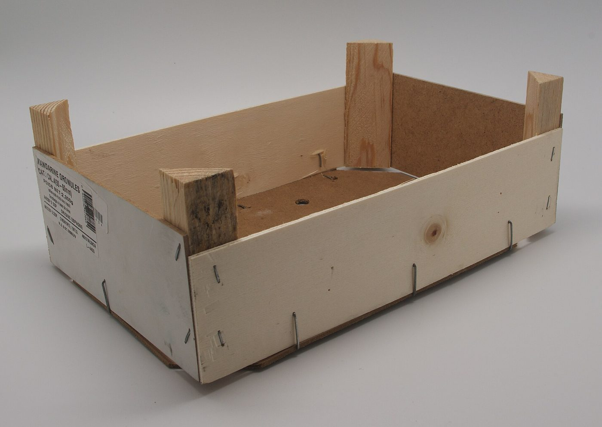
Un cageot, ou cagette, à claire-voie. Photo : Clément Bucco-Lechat, CC BY-SA 3.0, Wikimedia Commons.
Texte 2 · Francis Ponge, « Le Pain »
Référence : Le Parti pris des choses, 1942. Texte intégral.
Texte non reproduit : l'œuvre est protégée par le droit d'auteur. Lisez-le dans le livre indiqué ci-dessous.
Texte à lire dans : Francis Ponge, Le Parti pris des choses, Gallimard, 1942 (collection Poésie/Gallimard).
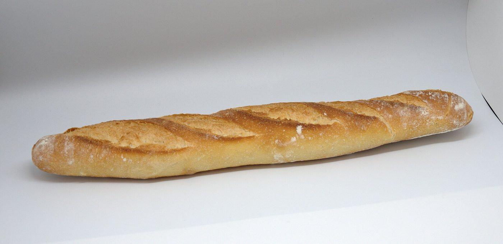
Une baguette. Photo : Yann Forget, CC BY-SA 4.0, Wikimedia Commons.
Texte 3 · Francis Ponge, « L'Huître »
Référence : Le Parti pris des choses, 1942. Texte intégral.
Texte non reproduit : l'œuvre est protégée par le droit d'auteur. Lisez-le dans le livre indiqué ci-dessous.
Texte à lire dans : Francis Ponge, Le Parti pris des choses, Gallimard, 1942 (collection Poésie/Gallimard).
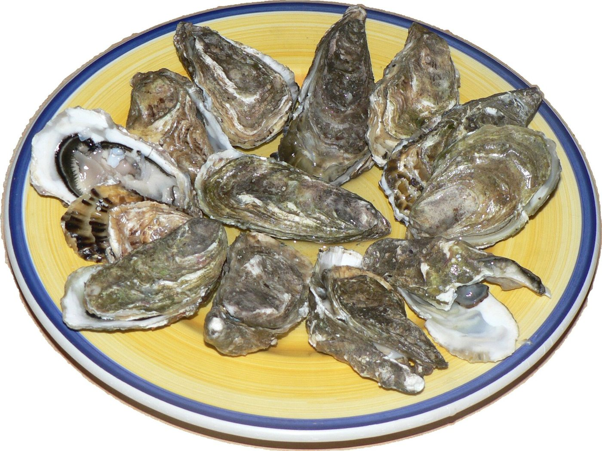
Huîtres dans une assiette, la plupart encore fermées. Photo : David Monniaux, CC BY-SA 3.0, Wikimedia Commons.
Texte 4 · Francis Ponge, « L'Orange » (évaluation)
Référence : Le Parti pris des choses, 1942. Texte intégral.
Texte non reproduit : l'œuvre est protégée par le droit d'auteur. Lisez-le dans le livre indiqué ci-dessous.
Texte à lire dans : Francis Ponge, Le Parti pris des choses, Gallimard, 1942 (collection Poésie/Gallimard).
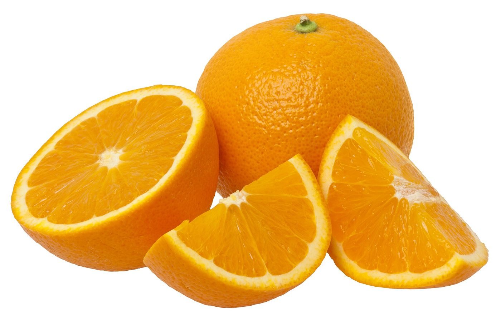
Une orange entière et des quartiers. Photo : Evan-Amos, CC BY-SA 3.0, Wikimedia Commons.
Texte 5 · Georges Perec, Les Choses, incipit
Référence : Julliard, 1965 (rééd. J'ai lu / Pocket). Début du chapitre 1, environ une page, puis la première phrase du chapitre 2.
Texte non reproduit : l'œuvre est protégée par le droit d'auteur. Lisez-le dans le livre indiqué ci-dessous.
Texte à lire dans : Georges Perec, Les Choses. Une histoire des années soixante, Julliard, 1965 (rééditions J'ai lu ou Pocket).
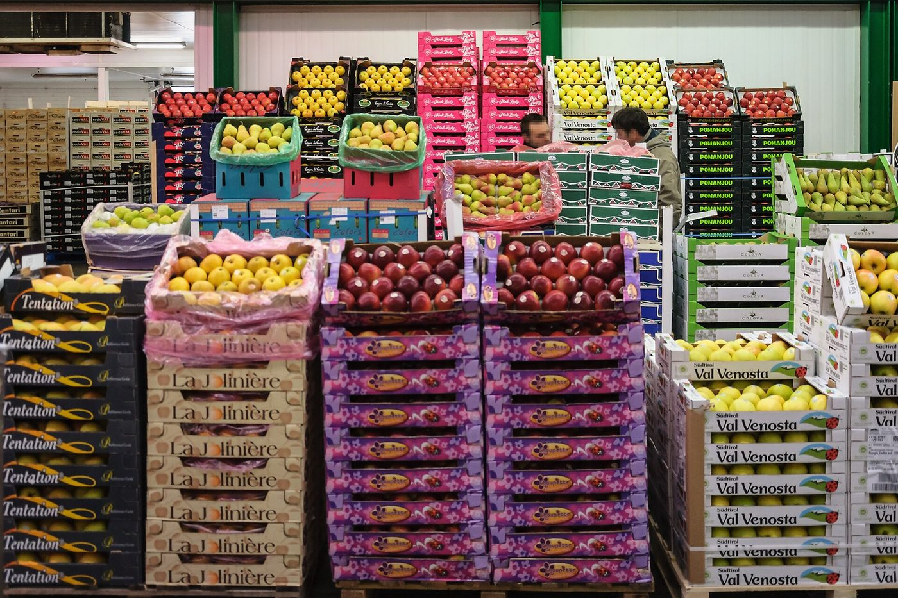
Fruits au marché d'intérêt national de Rungis : les choses s'accumulent, par caisses entières. Photo : Myrabella, CC BY-SA 4.0, Wikimedia Commons.
Texte 6 · Georges Perec, Tentative d'épuisement d'un lieu parisien
Référence : Christian Bourgois, 1975. La préface et le début de la première séance (18 octobre 1974).
Texte non reproduit : l'œuvre est protégée par le droit d'auteur. Lisez-le dans le livre indiqué ci-dessous.
Texte à lire dans : Georges Perec, Tentative d'épuisement d'un lieu parisien, Christian Bourgois, 1975.
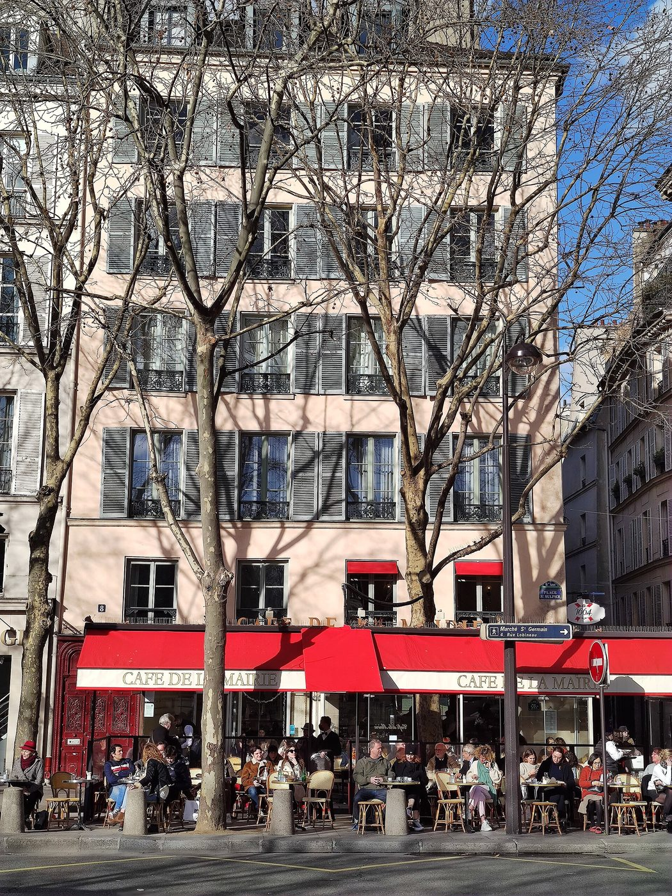
Le Café de la Mairie, 8 place Saint-Sulpice, à Paris. C'est là que Georges Perec s'installe en octobre 1974 pour écrire Tentative d'épuisement d'un lieu parisien. Photo : CVB, CC BY-SA 4.0, Wikimedia Commons.
Texte 7 · Georges Perec, Espèces d'espaces, « La page »
Référence : Galilée, 1974. Le début du chapitre « La page ».
Texte non reproduit : l'œuvre est protégée par le droit d'auteur. Lisez-le dans le livre indiqué ci-dessous.
Texte à lire dans : Georges Perec, Espèces d'espaces, Galilée, 1974.
Texte 8 · Georges Perec, Je me souviens
Référence : Hachette, 1978. Une quinzaine de souvenirs au choix.
Texte non reproduit : l'œuvre est protégée par le droit d'auteur. Lisez-le dans le livre indiqué ci-dessous.
Texte à lire dans : Georges Perec, Je me souviens, Hachette, 1978.
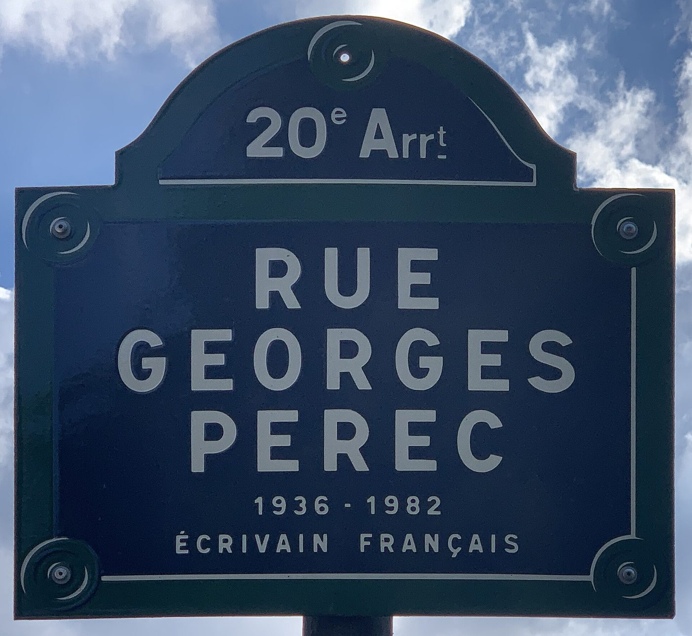
Rue Georges Perec, Paris 20e. Photo : Chabe01, CC BY-SA 4.0, Wikimedia Commons.
Texte 9 · Francis Ponge, Le Savon
Référence : Gallimard, 1967. Les premières pages (lecture cursive).
Texte non reproduit : l'œuvre est protégée par le droit d'auteur. Lisez-le dans le livre indiqué ci-dessous.
Texte à lire dans : Francis Ponge, Le Savon, Gallimard, 1967.
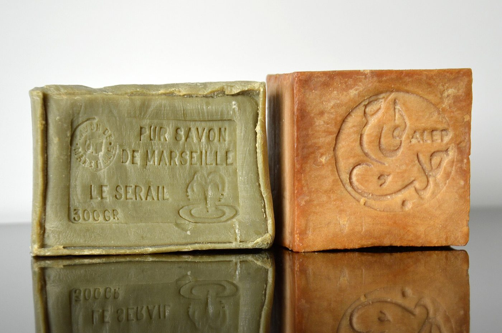
Pain de savon de Marseille et savon d'Alep. Photo : DimiTalen, CC0, Wikimedia Commons.
Séance 1. Regarder une chose
Durée : 1 h · Objectif : faire sentir que décrire un objet banal n'a rien de banal.
Étape 1. L'objet sur la table (15 min)
Consigne. Chacun a apporté un objet sans valeur : une gomme, une pince à linge, un bouchon, un ticket de métro. Pendant cinq minutes, écrivez tout ce que vous voyez, sans jamais dire à quoi il sert.
Puis lisez votre texte à votre voisin. Il doit deviner l'objet.
Étape 2. Deux phrases pour deux visions (20 min)
Le professeur projette deux débuts, sans nom d'auteur :
A. « À mi-chemin de la cage au cachot la langue française a cageot » (Ponge, « Le Cageot », 1942).
B. « L'œil, d'abord, glisserait sur la moquette grise d'un long corridor » (Perec, Les Choses, 1965).
Dans quelle phrase la langue elle-même est-elle le sujet ? Dans laquelle est-ce un regard ?
Quel temps domine dans B ? Que suggère-t-il : un réel ou un rêve ?
Laquelle de ces phrases vous semble parler d'un objet unique ? Laquelle d'un décor entier ?
Étape 3. Repères (15 min)
Francis Ponge (1899-1988). Poète né à Montpellier. Il publie Le Parti pris des choses en 1942, en pleine Occupation : 32 poèmes en prose sur le pain, l'huître, la bougie, le galet. Il veut « prendre le parti » des choses muettes contre le lyrisme qui ne parle que du moi. Il travaille avec le dictionnaire, en particulier le Littré.
Francis Ponge. Fernand Michaud, 1983, domaine public, Wikimedia Commons.
Georges Perec (1936-1982). Né à Paris de parents juifs polonais. Son père meurt au front en 1940, sa mère est déportée à Auschwitz en 1943. Les Choses obtient le prix Renaudot en 1965. Il entre à l'Oulipo en 1967 et écrit La Disparition (1969), roman sans la lettre e, puis La Vie mode d'emploi (1978).
Place Georges Perec, Paris 20e, plaque sans la lettre e. Photo : Parisette, CC BY-SA 3.0, Wikimedia Commons.
Étape 4. Trace écrite (10 min)
Je retiens. Au XXe siècle, deux écrivains font des objets ordinaires le cœur de leur œuvre. Ponge les regarde un par un pour en dire l'essence. Perec les accumule pour montrer ce qu'ils font de nous. Dans les deux cas, parler des choses est une manière détournée de parler de l'homme.
Séance 2. Lecture linéaire : « Le Cageot »
Francis Ponge, Le Parti pris des choses, 1942 · Durée : 2 h · Texte n°1.
Un cageot à claire-voie, objet du poème. Photo : Clément Bucco-Lechat, CC BY-SA 3.0, Wikimedia Commons.
Problématique de lecture. Comment un poème en prose très bref fait-il d'un objet jetable une petite leçon de langage et de morale ?
Questions pour la lecture
Relevez les trois mots de la première phrase qui se ressemblent. Que dit chacun ? Que dit leur rapprochement ?
Dans le premier paragraphe, quels mots font des fruits des êtres vivants et fragiles ?
Au deuxième paragraphe, à quel temps et avec quelle valeur sont les verbes ? Le texte ressemble-t-il à un article de dictionnaire ?
Quel paradoxe la comparaison avec les « denrées fondantes ou nuageuses » met-elle en lumière ?
Au troisième paragraphe, comment le cageot devient-il presque un personnage ? Relevez les adjectifs.
Expliquez la dernière phrase. Pourquoi le poète refuse-t-il de « s'appesantir » ? Quel lien entre la taille du poème et l'objet ?
Lecture linéaire
Situation. « Le Cageot » est l'un des plus courts textes du recueil : trois paragraphes, quelques lignes à peine. Ce n'est pas un hasard. La brièveté du poème mime la vie brève de l'objet.
Mouvement 1 · Premier paragraphe : la chose naît d'un mot
L'ouverture « À mi-chemin de la cage au cachot » place l'objet sur une ligne, entre deux lieux d'enfermement : la cage pour l'animal, le cachot pour le prisonnier. La paronomase cage / cachot / cageot montre que le mot contient déjà la chose : un cageot enferme, mais à moitié.
Le sujet du verbe est « la langue française ». La langue « a » cageot comme on a un outil : avant d'être en bois, l'objet est en mots. C'est tout le programme de Ponge.
Vient ensuite une définition sèche, presque de dictionnaire : une « simple caisse à claire-voie ». L'adjectif « simple » dit la pauvreté de l'objet. « Claire-voie » rappelle qu'il est fait de vides autant que de planches, de lumière autant que de bois.
Les fruits, eux, sont personnifiés : « de la moindre suffocation » ils tombent malades. Le cageot protège et étouffe à la fois.
Mouvement 2 · Deuxième paragraphe : un objet fait pour mourir
La phrase s'ouvre sur un participe apposé, « Agencé de façon qu'... » : le cageot est pensé dès sa fabrication pour être brisé. La proposition principale tombe, brève et négative : « il ne sert pas deux fois ». Le présent de vérité générale donne à ce constat la force d'une loi.
Le paradoxe suit. Le contenant dure moins que le contenu, ces denrées « fondantes ou nuageuses ». Les deux adjectifs sont surprenants pour des fruits : ils évoquent le sucre qui fond et la légèreté du duvet des pêches. L'objet solide est plus éphémère que la chair fragile qu'il porte.
Mouvement 3 · Troisième paragraphe : compassion et art poétique
Le décor devient précis : les rues qui mènent aux halles, le grand marché de Paris jusqu'en 1969. Le cageot jeté y « luit » de « l'éclat sans vanité du bois blanc ». L'expression associe la lumière et la modestie : c'est une beauté qui ne se vante pas. On peut y lire un clin d'œil aux « vanités » des peintres, ces natures mortes qui rappellent que tout passe.
Le cageot est alors traité comme une personne : « tout neuf », « légèrement ahuri », dans une « pose maladroite ». L'ordre des mots se renverse dans « à la voirie jeté sans retour » : cette hyperbate désarticule la phrase comme l'objet tombé dans le caniveau.
Le jugement final est familier : l'objet est « des plus sympathiques ». Au sens propre (du grec sun-pathein, souffrir avec), le poète partage le sort de la chose.
La dernière proposition refuse pourtant le pathos : il ne faut pas « s'appesantir longuement » sur son sort. Le mot est choisi avec humour, puisque le cageot est léger. Le poème doit rester aussi léger que lui. Ponge écrit ici son art poétique : adapter la forme du texte à la nature de la chose.
Je retiens. Ponge part du mot pour aller à la chose (cage, cachot, cageot). Il définit l'objet comme un dictionnaire, mais avec des images. La forme du poème imite l'objet : bref comme lui, léger comme lui. Sous la description, une morale : la dignité de ce qui ne dure pas.
Séance 3. Lecture linéaire : « Le Pain »
Francis Ponge, Le Parti pris des choses, 1942 · Durée : 2 h · Texte n°2.
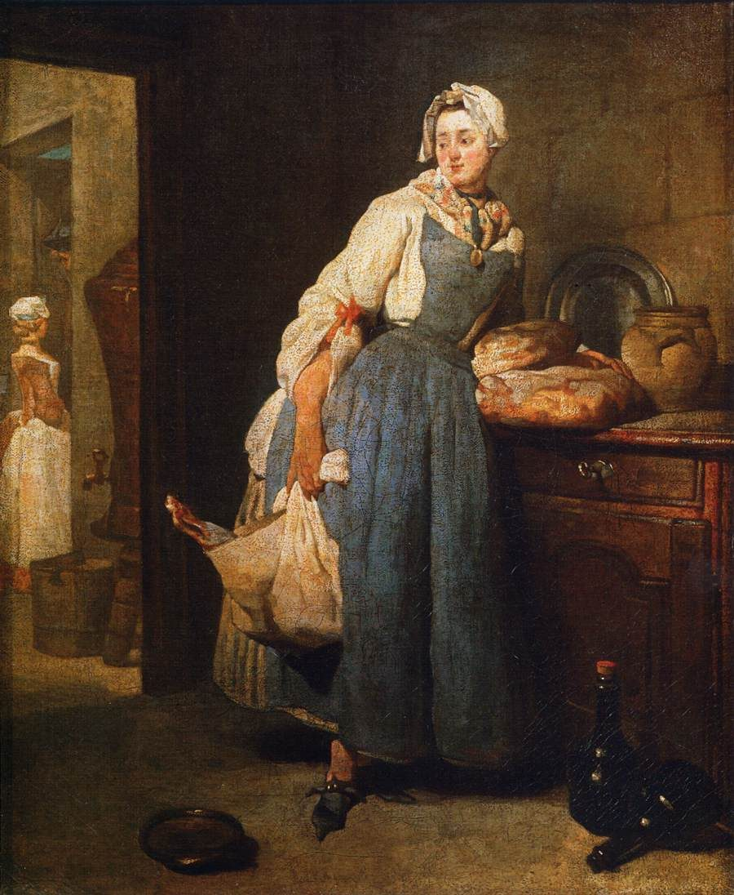
Jean Siméon Chardin, La Pourvoyeuse, 1739, huile sur toile, 47 × 38 cm, musée du Louvre. Domaine public. Une servante revient du marché, deux gros pains posés sous le bras : le pain quotidien, peint avec le même respect qu'un visage. Voir le tableau sur Wikimedia Commons.Une baguette, l'objet regardé de près dans le poème. Photo : Yann Forget, CC BY-SA 4.0, Wikimedia Commons.
Problématique de lecture. Comment Ponge transforme-t-il un pain ordinaire en un véritable univers, avant de le rendre à sa fonction première : être mangé ?
Questions pour la lecture
Relevez les noms de montagnes du début. Sur quels continents se trouvent-elles ? Quel effet produit cette énumération ?
Quels mots du texte évoquent une création du monde ? À quel temps est le récit de cette création ?
Opposez la croûte et la mie : relevez pour chacune les adjectifs et les images.
Le mot « lâche » a deux sens. Lesquels ? Que suggère ce double sens ?
Que devient la mie quand le pain rassit ? Qu'introduit cette remarque ?
Expliquez le jeu de mots de la dernière phrase. Pourquoi le pain doit-il être « moins objet de respect que de consommation » ?
Lecture linéaire
Mouvement 1 · La croûte comme paysage
Le premier adjectif est un émerveillement : la surface du pain est « merveilleuse d'abord ». L'adverbe « d'abord » annonce une progression méthodique, de l'extérieur vers l'intérieur.
L'impression est « quasi panoramique » : le regard change d'échelle. Les Alpes, le Taurus et la Cordillère des Andes, trois chaînes de trois continents, tiennent « sous la main ». L'hyperbole fait du pain une carte du monde, et du mangeur un géant.
Mouvement 2 · Une genèse en miniature
Le texte passe au récit, au passé simple et au passif : une « masse amorphe en train d'éructer » fut glissée dans le « four stellaire ». C'est une création du monde. La pâte informe est un chaos, le four est une étoile, la cuisson est une formation géologique : vallées, crêtes, crevasses.
Le complément « pour nous » est essentiel. Comme dans la Genèse, la création est orientée vers l'homme, mais le Créateur a disparu : le passif efface le boulanger. Le verbe « éructer », trivial, rappelle aussi la fermentation et le volcan. Le sublime et le corporel cohabitent.
La lumière se pose avec soin sur les « dalles » de la croûte, « sans un regard pour la mollesse ignoble sous-jacente ». Le mot « ignoble », au sens étymologique « non noble », installe une hiérarchie : la croûte est l'aristocratie, la mie le peuple d'en dessous.
Mouvement 3 · La mie, un monde souterrain
On descend dans un « lâche et froid sous-sol ». « Lâche » signifie mou, sans tension ; il signifie aussi sans courage. Le double sens donne à la matière une valeur morale.
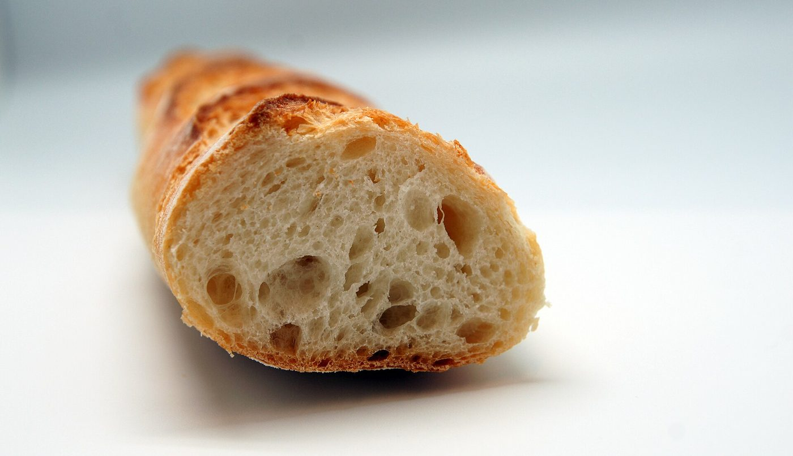
La croûte et la mie d'une baguette. Photo : Popo le Chien, CC BY-SA 4.0, Wikimedia Commons.
La comparaison avec les éponges est suivie d'une image végétale et étrange : feuilles ou fleurs y sont « comme des sœurs siamoises », soudées « par tous les coudes à la fois ». L'allitération en [s] fait entendre la douceur collante de la mie.
Puis vient le temps. Quand le pain rassit, les fleurs fanent, se détachent, la masse devient friable. L'objet, comme le cageot, est mortel.
Mouvement 4 · La chute : rompre le pain
La conjonction « Mais » casse l'élan : « Mais brisons-la ». Le jeu de mots est double. « Brisons-là » (avec accent) veut dire « arrêtons la conversation ». « Brisons-la » (sans accent) veut dire « cassons-la », la masse du pain. Le poème se termine au moment où l'on rompt le pain.
Ce geste rappelle la fraction du pain dans la Cène, le plus sacré des repas. Ponge le désacralise aussitôt : le pain doit être « moins objet de respect que de consommation ». Après avoir fait du pain un cosmos, le poète refuse d'en faire une idole. La poésie ne doit pas mettre les choses sous vitrine. Elle les rend à l'usage, comme le lecteur « consomme » le poème.
Je retiens. « Le Pain » va de la surface à l'intérieur, comme un explorateur. La croûte devient un paysage, la cuisson une genèse, la mie un sous-sol. Le texte finit sur un jeu de mots (brisons-là / brisons-la) qui ramène au geste de manger. Pour Ponge, l'objet doit être connu, puis consommé, pas adoré.
Séance 4. Explication orale modèle : « L'Huître »
Francis Ponge, Le Parti pris des choses, 1942 · Durée : 2 h · Texte n°3 · Format de la première partie de l'oral de Première (12 minutes).
Rappel du format. Lecture expressive, puis explication linéaire, puis une question de grammaire sur une phrase du texte. L'ensemble dure 12 minutes. L'ordre de la lecture et de la grammaire peut être fixé par l'examinateur.
Problématique. Comment la description d'une huître difficile à ouvrir devient-elle une image du poème lui-même et du travail du lecteur ?
Huîtres encore fermées : « un monde opiniâtrement clos ». Photo : David Monniaux, CC BY-SA 3.0, Wikimedia Commons.
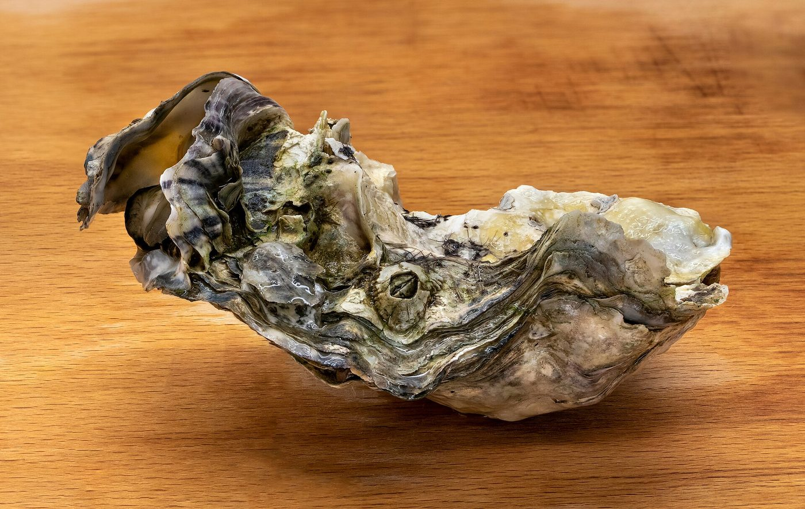
Une huître ouverte. Photo : W.carter, CC BY-SA 4.0, Wikimedia Commons.
Parcours de préparation
Premier paragraphe : par quelles comparaisons l'huître est-elle d'abord présentée ? Que signifie « opiniâtrement clos » ?
Comment est décrite l'ouverture ? Relevez le lexique de la violence et de l'effort.
Repérez les mots terminés par « -âtre ». Quelle valeur a ce suffixe ? Que remarquez-vous à l'écrit sur le « â » ?
Pourquoi Ponge précise-t-il « à proprement parler » après « firmament » ? Cherchez l'étymologie du mot.
Dans la dernière phrase, quels sont les deux sens de « perle » ? À quoi peut faire penser une « formule » rare ?
Explication rédigée
Introduction
Dans Le Parti pris des choses, Ponge décrit des objets humbles pour en dire l'essence. « L'Huître » occupe une place à part : sous la description d'un coquillage, le poète parle de la difficulté de lire et de la rareté du poème réussi. Le texte suit l'ordre d'une dégustation : l'extérieur, l'ouverture, l'intérieur, la perle.
Mouvement 1 · Un monde fermé
L'huître est d'abord mesurée, comparée à un « galet moyen » : Ponge procède en naturaliste. Mais l'adverbe opiniâtrement donne à la coquille un caractère humain, l'entêtement. L'huître n'est pas seulement close, elle refuse de s'ouvrir.
Le son « âtre » apparaît déjà dans le mot « huître » et dans « blanchâtre ». Il reviendra : la couleur et le son de l'objet sont travaillés ensemble.
Mouvement 2 · L'ouverture, un travail
« Pourtant on peut l'ouvrir » : le connecteur concessif lance l'action. Suivent des infinitifs qui forment un mode d'emploi : la tenir, se servir d'un couteau, s'y reprendre. Le couteau est « ébréché et peu franc », les doigts « curieux » se coupent. Le travail est « grossier ».
On peut lire ce passage comme une image de la lecture : le poème résiste, il faut s'y reprendre à plusieurs fois, et la curiosité se paie.
Mouvement 3 · L'intérieur, un univers dégradé
L'intérieur est « tout un monde, à boire et à manger ». L'expression figée est prise à la lettre : on boit l'eau de l'huître et on mange sa chair, mais il y a aussi « à boire et à manger », c'est-à-dire du bon et du moins bon.
Le « firmament (à proprement parler) de nacre » est une précision malicieuse. Le latin firmamentum désigne un appui solide : la voûte de nacre est vraiment un ciel ferme. Les « cieux d'en dessus » qui s'affaissent sur les « cieux d'en dessous » rappellent la Genèse, où Dieu sépare les eaux d'en haut et celles d'en bas. Ici, le cosmos s'effondre.
Le registre bascule alors dans le peu ragoûtant : une mare, un « sachet visqueux et verdâtre », une « dentelle noirâtre ». Le suffixe péjoratif -âtre répété fait entendre l'huître dans chaque couleur. L'accent circonflexe même semble dessiner une petite coquille sur les mots.
Mouvement 4 · La perle, image du poème
La dernière phrase est isolée : « Parfois très rare une formule perle ». « Perle » est un verbe (perler, se former en goutte) et un nom (la perle). Le mot « formule » appartient au langage : la perle est une formule réussie, rare, au milieu de la matière molle.
On « trouve aussitôt à s'orner » de cette perle. Le lecteur s'en pare comme d'un bijou, c'est-à-dire qu'il la cite. Le texte s'achève donc sur un art poétique : le poème est la perle de l'huître, rare et difficile à obtenir.
Conclusion
« L'Huître » est à la fois une description exacte et une allégorie de l'écriture. Ponge fait travailler ensemble le sens, le son et même l'orthographe. Ouverture : Perec cherchera lui aussi à « ouvrir » l'ordinaire, non plus un objet fermé, mais une place entière de Paris.
Séance 5. Lecture linéaire : Les Choses, incipit
Georges Perec, Les Choses. Une histoire des années soixante, Julliard, 1965, début du chapitre 1 · Durée : 2 h · Texte n°5.
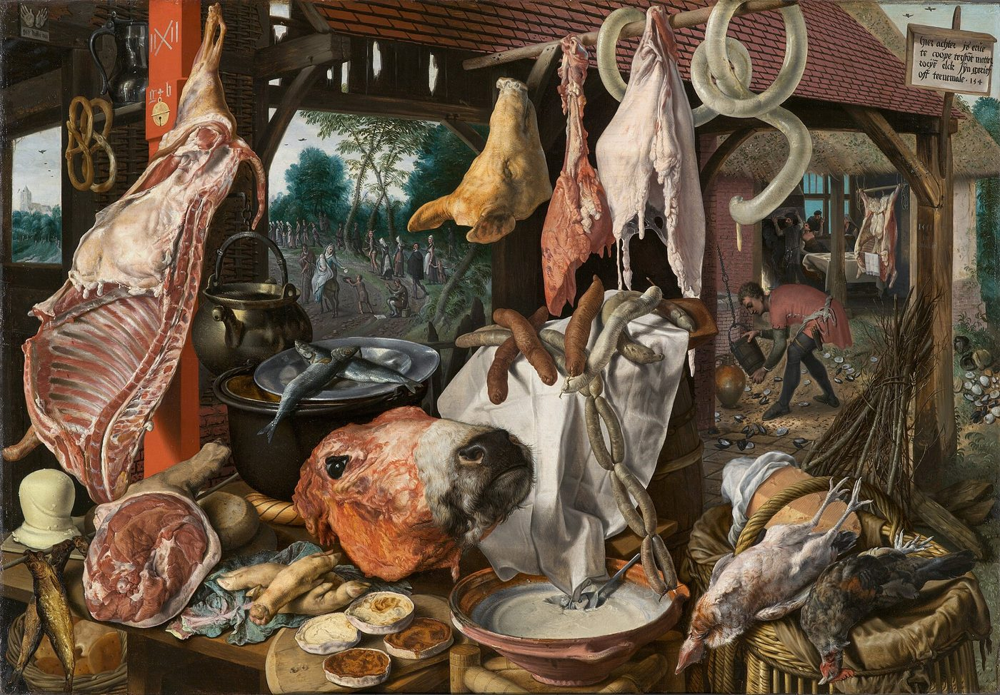
Pieter Aertsen, L'Étal de boucher, 1551, huile sur bois, North Carolina Museum of Art. Domaine public. Les marchandises envahissent tout le premier plan ; la scène sacrée est reléguée au fond, minuscule. Quatre siècles avant Perec, les choses ont déjà pris la place des hommes. Voir le tableau sur Wikimedia Commons.Fruits au MIN de Rungis : l'abondance des marchandises, le monde de Les Choses. Photo : Myrabella, CC BY-SA 4.0, Wikimedia Commons.
Le roman en bref. Jérôme et Sylvie ont environ 25 ans. Ils sont psychosociologues : ils font des enquêtes d'opinion pour des agences de publicité. Ils rêvent d'un appartement parfait et d'objets raffinés, mais n'ont pas les moyens de leurs désirs. Ils partent à Sfax, en Tunisie, s'y ennuient, puis rentrent. Dans l'épilogue, Jérôme accepte un poste à Bordeaux. Le roman s'achève sur un repas « insipide » et sur une citation de Marx.
Problématique de lecture. Comment cet incipit, où personne n'apparaît, fait-il pourtant le portrait d'une génération entière ?
Questions pour la lecture
Qui est le sujet du premier verbe ? Y a-t-il un personnage dans ce début de roman ?
Relevez les verbes conjugués. À quel temps sont-ils ? Quelle est la valeur de ce temps ?
Repérez les adverbes et les compléments qui organisent le trajet du regard. À quelle technique du cinéma fait-il penser ?
Faites la liste des matières (bois, cuir, tissus…). Qu'ont-elles en commun ?
Ce décor ressemble à quel type de document de la vie quotidienne ?
Lisez le début du chapitre 2. Que révèle-t-il, après coup, sur le chapitre 1 ?
Lecture linéaire
Mouvement 1 · Un regard sans personne
Le roman s'ouvre sur « L'œil, d'abord, glisserait ». Le sujet est une métonymie : un œil sans visage. Personne n'est nommé. Le lecteur prend la place de ce regard.
Le verbe « glisserait » est au conditionnel présent. Ce n'est pas un appartement réel, c'est un appartement rêvé. Le verbe « glisser » dit aussi la facilité, la surface : l'œil ne s'arrête sur rien, il caresse.
L'adverbe « d'abord » annonce un parcours ordonné. La description avance comme un travelling de cinéma : le corridor, puis les pièces, puis les meubles. Perec, grand amateur de cinéma, compose une scène vue par une caméra.
Mouvement 2 · L'inventaire du bon goût
La description devient une longue énumération de groupes nominaux. Les matières sont nobles : bois précieux, cuir, cuivre, tissus. Les objets sont choisis, signés, cultivés : livres, gravures, bibelots. Les pluriels indéfinis (« des... ») multiplient les choses sans fin.
Tout est harmonieux, propre, à sa place. C'est exactement l'appartement des magazines de décoration et des publicités des années 1960. Perec emprunte la langue du catalogue pour montrer d'où viennent les rêves de ses personnages : ils désirent ce qu'on leur montre.
Le lecteur attentif sent une ironie discrète. La perfection est trop lisse, et l'abondance des détails finit par étouffer, comme les fruits du cageot.
Mouvement 3 · La vie rêvée
À la fin du chapitre, le conditionnel ne porte plus seulement sur les meubles, mais sur la vie elle-même : elle serait facile, simple, heureuse. Les objets promettent un bonheur. Ce sont eux qui décident de ce que serait l'existence.
Le chapitre 2 éclaire tout après coup : « Ils auraient aimé être riches ». Les personnages apparaissent enfin, mais par le pronom « ils », sans prénom, et au conditionnel passé, celui du regret. Le rêve du chapitre 1 était donc le leur, et il est hors de portée.
Je retiens. L'incipit des Choses est un appartement rêvé, décrit par un œil sans personne, au conditionnel. Les objets y sont accumulés comme dans un catalogue. Perec montre que le désir de ses personnages est fabriqué par la publicité. L'homme n'est pas absent : il est remplacé par ses objets.
Séance 6. Écrire « le reste » : l'infra-ordinaire
Perec, Tentative d'épuisement d'un lieu parisien (1975), préface et première séance ; Espèces d'espaces (1974), « La page » · Durée : 2 h · Textes n°6 et n°7.
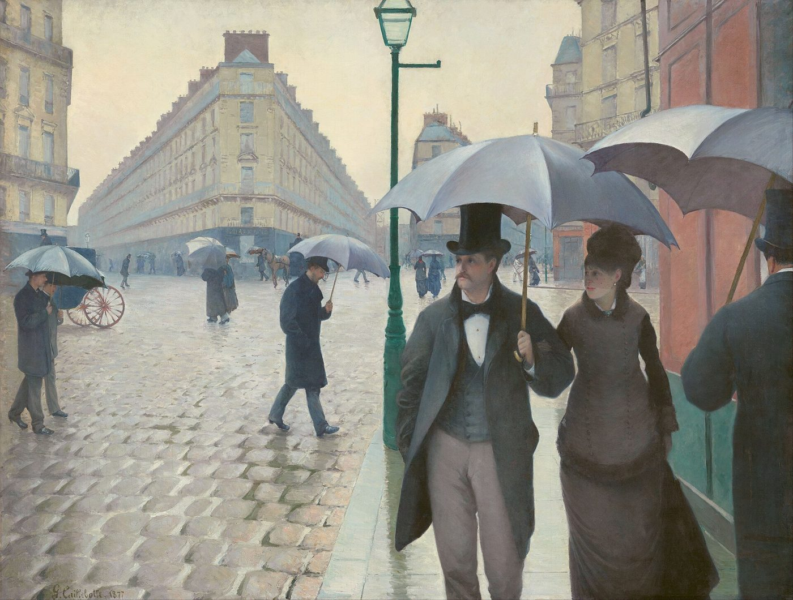
Gustave Caillebotte, Rue de Paris, temps de pluie, 1877, huile sur toile, 212 × 276 cm, Art Institute of Chicago. Domaine public. Un carrefour, des passants, des parapluies, des pavés : rien d'extraordinaire, tout est regardé. Voir le tableau sur Wikimedia Commons.Le Café de la Mairie, 8 place Saint-Sulpice. Perec s'y installe les 18, 19 et 20 octobre 1974 pour noter ce qu'il voit : autobus, passants, pigeons, enseignes. Photo : CVB, CC BY-SA 4.0, Wikimedia Commons.
Le dispositif. Du 18 au 20 octobre 1974, Perec s'installe à plusieurs reprises dans des cafés de la place Saint-Sulpice, à Paris. Il note l'heure, le temps qu'il fait, et tout ce qui passe : autobus, passants, pigeons, couleurs, lettres des enseignes. Il laisse de côté ce que décrivent les guides (l'église, la fontaine, la mairie).
Problématique. Que gagne-t-on à décrire ce qui ne se remarque pas, et peut-on vraiment « épuiser » un lieu ?
Questions
Dans la préface, que Perec refuse-t-il de décrire ? Que veut-il décrire à la place ?
Observez la mise en page de la première séance. Quels types de phrases dominent ? Trouvez des phrases sans verbe.
Quels éléments reviennent sans cesse ? Quel effet produit la répétition ?
Le mot « épuisement » a deux sens. Lesquels ? Qui finit épuisé : le lieu ou l'écrivain ?
Dans « La page », comment Perec part-il de la feuille de papier pour arriver au monde ?
Analyse comparée
1. Un projet : décrire « le reste »
La préface annonce que Perec veut décrire « ce qui ne se remarque pas, ce qui n'a pas d'importance ». Il nomme ailleurs cet ordinaire invisible l'infra-ordinaire : ce qui est sous l'ordinaire, comme l'infrarouge est sous le rouge. C'est l'opposé du journal, qui ne parle que de l'événement.
2. Une écriture de protocole
Le texte est fait de listes, de phrases nominales, de notations brèves : un autobus qui passe, un numéro de ligne, un passant avec un parapluie. Les déterminants disparaissent souvent. La phrase se réduit à l'enregistrement.
Le protocole est fixé d'avance : un lieu, des dates, des heures, un point de vue. C'est une méthode de sociologue ou d'ethnologue appliquée à sa propre ville.
3. L'échec fécond
Plus on avance, plus les répétitions s'accumulent : les mêmes bus, les mêmes pigeons, la même lumière qui change. Le lieu ne s'épuise jamais, c'est l'observateur qui s'épuise. Peu à peu le « je » réapparaît : fatigue, rêverie, petites émotions. À force de regarder les choses, on finit par se voir soi-même.
4. « La page » : habiter l'espace de l'écriture
Espèces d'espaces commence par l'espace le plus petit : la feuille. « J'écris : j'habite ma feuille de papier ». Puis le livre élargit le cercle : le lit, la chambre, l'appartement, l'immeuble, la rue, le quartier, la ville, le pays, le monde. L'écriture est une manière d'habiter, et habiter un espace, c'est le regarder vraiment.
Séance 7. Écrire sous protocole : l'objeu et la contrainte
Ponge, Le Savon (1967) ; Perec, Je me souviens (1978) ; l'Oulipo · Durée : 2 h · Textes n°8 et n°9.
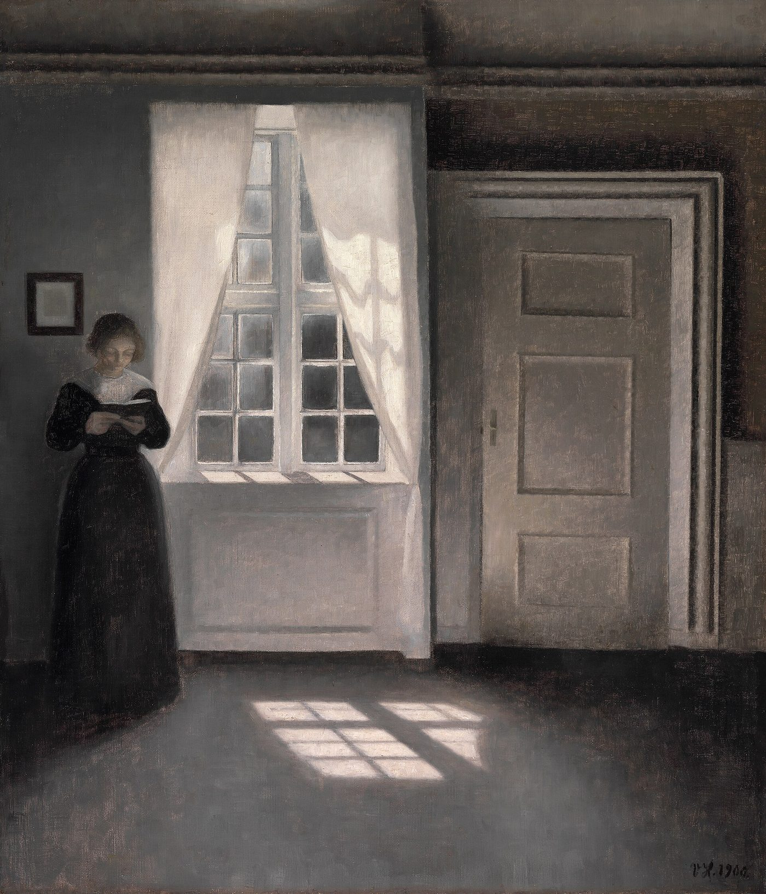
Vilhelm Hammershøi, Intérieur, Strandgade 30, 1900, huile sur toile. Domaine public. Une pièce presque vide, une lumière grise : les lieux gardent la trace de ceux qui y ont vécu. C'est l'atmosphère de Je me souviens. Voir le tableau sur Wikimedia Commons.Le savon, objet du livre de Ponge, qui fond à mesure qu'on l'écrit. Photo : DimiTalen, CC0, Wikimedia Commons.Rue Georges Perec, Paris 20e. Photo : Chabe01, CC BY-SA 4.0, Wikimedia Commons.
1. Ponge, Le Savon : l'objeu
Ponge écrit Le Savon de 1942 à 1946 et ne le publie qu'en 1967. Le livre montre l'écriture en train de se faire : notes, reprises, variantes, dates. Le savon et le texte fonctionnent de la même manière : on les fait mousser, ils se transforment, ils s'usent à force d'être employés.
Ponge invente un mot pour cette méthode : l'objeu, l'objet devenu jeu de langage. Écrire, ce n'est plus livrer un poème fini mais jouer avec la chose jusqu'à ce qu'elle se dise.
2. Perec, Je me souviens : la contrainte d'une formule
Le livre réunit 480 souvenirs numérotés, qui commencent tous par « Je me souviens ». Perec reprend l'idée du peintre et poète américain Joe Brainard (I Remember, 1970). Ce ne sont pas des souvenirs intimes, mais des souvenirs partagés par toute une génération, entre 1946 et 1961 : une chanson, une marque, un acteur, un objet disparu.
Le livre se termine par des pages blanches, que le lecteur est invité à remplir. La mémoire des choses devient une mémoire collective.
Pourquoi ce livre est-il si fort ? Perec écrit dans W ou le souvenir d'enfance (1975) : « Je n'ai pas de souvenirs d'enfance ». Orphelin de la guerre, il a perdu les traces de sa propre histoire. Les petits objets communs de Je me souviens remplacent ce qui manque. L'objet banal n'est plus un signe d'aliénation : il devient un rempart contre l'effacement.
3. L'Oulipo
L'Ouvroir de littérature potentielle est fondé en 1960 par Raymond Queneau et François Le Lionnais. Ses membres inventent des contraintes : écrire sans la lettre e (lipogramme), remplacer chaque nom par le septième qui le suit dans le dictionnaire (S+7), raconter la même histoire de 99 façons (Exercices de style). Pour l'Oulipo, la contrainte ne bride pas l'imagination, elle la provoque.
Atelier de contraintes
Je me souviens. Écrivez dix souvenirs commençant par « Je me souviens », uniquement sur des objets ou des choses communes de votre enfance (un jouet, un dessin animé, une marque de goûter). Aucun souvenir trop intime.
Variations. Décrivez une éponge de trois façons : comme un savant, comme un enfant, comme une publicité.
Lipogramme. Décrivez votre trousse en cinq lignes sans utiliser la lettre a.
Séance 8. Étude de la langue
Durée : 2 h · Les exercices s'appuient sur le corpus.
Exercice 1. Les déterminants : l'essence ou la foule
Comparez les titres de Ponge (« Le Cageot », « Le Pain », « L'Huître ») et le titre de Perec (Les Choses). Puis comparez avec cette énumération de Perec : « des boîtes à priser, des bonbonnières, des cendriers de jade ».
Identifiez chaque déterminant (nature, nombre).
Quelle est la valeur de l'article défini singulier chez Ponge ?
Que suggère le pluriel indéfini chez Perec ?
Ces valeurs sont reprises dans les lectures linéaires : chez Ponge, l'article défini au singulier a une valeur générique et archétypale ; chez Perec, le pluriel indéfini traduit le vertige de la prolifération.
Exercice 2. La phrase nominale
Transformez ces phrases verbales en phrases nominales, à la manière de la Tentative :
Un autobus passe devant le café.
Il commence à pleuvoir sur la place.
Une femme traverse en tenant un parapluie rouge.
Quel effet produit la suppression du verbe ?
Exercice 3. Les valeurs du conditionnel
Donnez la valeur du conditionnel dans chaque phrase :
L'œil, d'abord, glisserait sur la moquette grise.
Ils auraient aimé être riches.
Il affirma qu'il viendrait le lendemain.
Pourriez-vous fermer la fenêtre ?
Selon la presse, le ministre démissionnerait.
Exercice 4. Le présent
Dans « il ne sert pas deux fois » (Ponge) et « Un autobus passe » (Perec), quelle est la valeur du présent ? Pourquoi est-elle différente ?
Exercice 5. La négation (programme de l'oral)
Classez ces négations : totale, partielle, restrictive, lexicale, ou réduite à « ne ».
Il ne sert pas deux fois.
Il convient de ne s'appesantir longuement.
Sans un regard pour la mollesse ignoble.
Il ne reste qu'une mare.
Personne ne regarde la fontaine.
Ce qui n'a pas d'importance.
Exercice 6. Les figures de style
Nommez la figure et donnez son effet :
« de la cage au cachot la langue française a cageot »
« Mais brisons-la »
« un firmament (à proprement parler) de nacre »
« légèrement ahuri d'être dans une pose maladroite »
« les Alpes, le Taurus ou la Cordillère des Andes »
Séance 9. Atelier « Savoir-Fiction » : deux notices pour un même objet
Durée : 2 h · Évaluation formative ou sommative (grille ci-dessous).
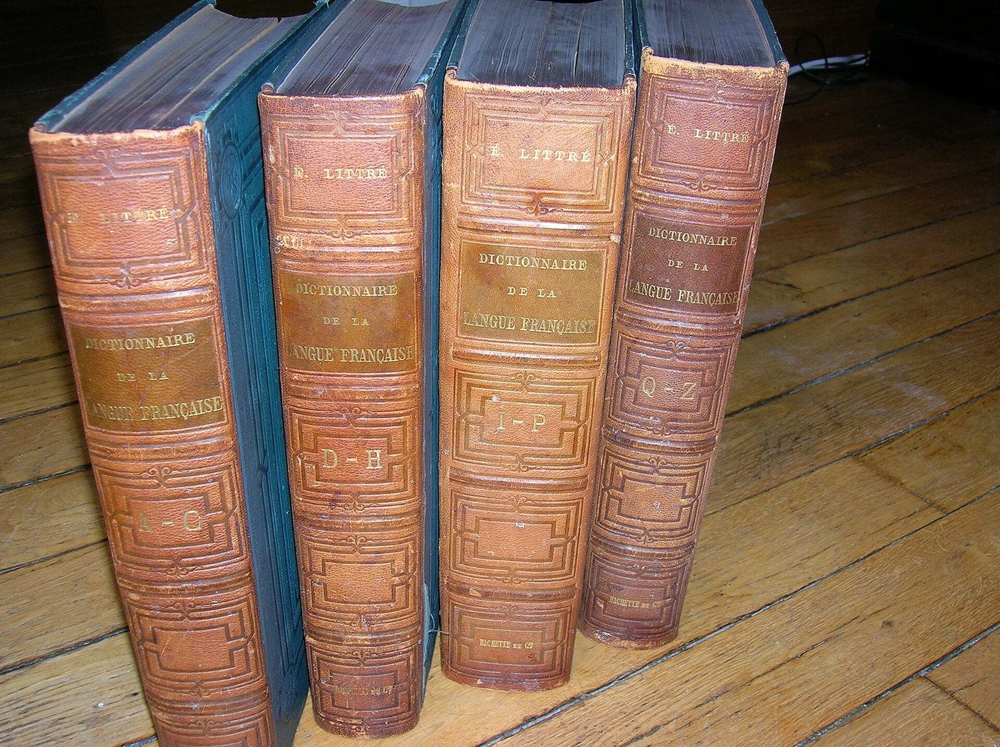
Le Dictionnaire de la langue française d'Émile Littré, l'outil de travail de Ponge pour partir du mot. Photo : LPLT, CC BY-SA 3.0, Wikimedia Commons.
Sujet. Choisissez un objet de votre époque : un chargeur, des écouteurs, une carte bancaire, une trottinette, une gourde. Écrivez deux textes d'une douzaine de lignes chacun :
À la manière de Ponge : un poème en prose au présent de vérité générale, qui part du mot (étymologie, sonorités, définition), file une image et se termine par une petite leçon ou un trait d'humour.
À la manière de Perec : un inventaire au conditionnel, avec des pluriels indéfinis et des groupes nominaux, qui montre le désir et le regard social sur l'objet.
Étapes
Le dictionnaire (15 min). Cherchez le mot, son étymologie, ses synonymes, les mots qui lui ressemblent par le son.
La liste (15 min). Notez vingt groupes nominaux liés à l'objet : matières, couleurs, marques, lieux, gestes.
Le premier jet (45 min). Rédigez les deux notices.
La relecture croisée (15 min). Votre voisin vérifie les critères de la grille.
La mise au propre (30 min).
Grille d'évaluation (sur 20)
Critère
Points
Notice Ponge : part du mot (étymologie, sons ou définition)
2
Présent de vérité générale et article défini générique
2
Au moins une image filée ou une personnification
2
Chute : leçon, humour ou jeu de mots
2
Notice Perec : conditionnel du désir maîtrisé
2
Inventaire : groupes nominaux, pluriels indéfinis, précision des matières
2
Regard social : publicité, réussite, insatisfaction
2
Les deux textes : styles nettement distincts
2
Langue correcte (orthographe, syntaxe, ponctuation)
3
Originalité et soin
1
Total
20
Séance 10. Préparer le bac : dissertation et oral
A. La dissertation
Sujet. « Écrire sur les choses ordinaires, est-ce se détourner de l'homme ? » Vous répondrez en vous appuyant sur les textes de Ponge et de Perec étudiés, ainsi que sur vos lectures personnelles.
1. Analyser le sujet
« Écrire sur » : choisir comme sujet, mais aussi écrire à partir de.
« les choses ordinaires » : objets banals, quotidiens, sans valeur poétique reconnue.
« se détourner » : fuir, éviter, tourner le dos. Le verbe suppose un choix volontaire.
« l'homme » : l'individu, ses sentiments (le lyrisme), mais aussi la condition humaine et la société.
La question fermée appelle un plan dialectique : oui en apparence, non en profondeur, puis un dépassement.
2. Problématique
En choisissant de décrire des cageots, des pains ou des places de Paris, la littérature du XXe siècle tourne-t-elle le dos à l'homme, ou invente-t-elle au contraire un nouveau moyen de parler de lui ?
3. Plan détaillé
I. En apparence, l'objet efface l'homme
A. Le refus du lyrisme : Ponge « prend le parti des choses » contre l'effusion du moi. Le « je » disparaît de « Le Cageot » ou de « L'Huître ».
B. Le règne de l'inventaire : chez Perec, l'œil sans visage du chapitre 1 et les listes de la Tentative remplacent la psychologie des personnages.
C. Une écriture d'enregistrement : présent de vérité générale, phrases nominales, protocole. Le texte semble viser l'objectivité du savant.
II. En réalité, la chose est un miroir de la condition humaine
A. Une morale des choses : la dignité du cageot éphémère, la résistance de l'huître, le pain qui nourrit. Ponge fait des objets des modèles de conduite.
B. Un symptôme social : chez Perec, les objets disent l'aliénation d'une génération, son désir fabriqué par la publicité, son insatisfaction.
C. Une mémoire : Je me souviens fait des choses communes le lien entre les hommes et un rempart contre l'oubli.
III. Écrire les choses, c'est affirmer le pouvoir humain du langage
A. Le langage recrée le monde : jeux de mots, étymologies, objeu. La chose n'existe pleinement qu'une fois dite.
B. La contrainte comme liberté : l'Oulipo et le protocole de Perec font de la règle un outil d'invention.
C. Le lecteur convoqué : on « s'orne » de la perle de Ponge, on remplit les pages blanches de Perec. L'objet devient un lieu de partage.
4. Introduction rédigée
On a longtemps attendu de la poésie qu'elle dise les grands sentiments et du roman qu'il peigne les passions. Pourtant, au XXe siècle, des écrivains choisissent de consacrer leurs textes à un cageot, à un morceau de pain ou à l'appartement rêvé d'un jeune couple. Faut-il y voir une fuite loin de l'homme ?
Le sujet invite à se demander si écrire sur les choses ordinaires revient à tourner le dos à l'être humain, ou si l'objet n'est pas, au contraire, un chemin détourné pour parler de lui.
Nous verrons d'abord que l'objet semble chasser l'homme du texte, puis qu'il en devient en réalité le miroir, avant de montrer qu'écrire les choses est une manière d'affirmer la puissance humaine du langage.
Grille de la dissertation (sur 20)
Critère
Points
Introduction : amorce, sujet analysé, problématique, annonce du plan
3
Plan dialectique cohérent, parties équilibrées, transitions
4
Arguments pertinents et progressifs
4
Exemples précis, citations courtes et analysées
4
Conclusion : bilan et ouverture
2
Expression : syntaxe, orthographe, vocabulaire de l'analyse
3
Total
20
B. La seconde partie de l'oral : présenter une œuvre
Pendant 8 minutes, vous présentez une œuvre lue dans l'année, puis vous échangez avec l'examinateur. Il veut savoir si vous l'avez lue, comprise, et si vous savez dire pourquoi vous l'avez choisie.
Fiche de préparation (Le Parti pris des choses ou Les Choses) :
Pourquoi ai-je choisi cette œuvre ? Une raison personnelle et une raison littéraire.
Résumé ou présentation en trois phrases.
Un passage que j'aime, et pourquoi (avec une citation courte).
Un lien avec une autre œuvre (Ponge et Perec, Barthes, Ernaux, un tableau).
Une question que l'œuvre me pose aujourd'hui (l'objet, le désir, la consommation).
Grille de l'oral, seconde partie (sur 8)
Critère
Points
Présentation claire de l'œuvre et justification du choix
2
Connaissance précise de l'œuvre (passages, personnages, structure)
2
Capacité à argumenter et à relier à d'autres œuvres
2
Qualité de l'expression et de l'échange
2
Évaluations
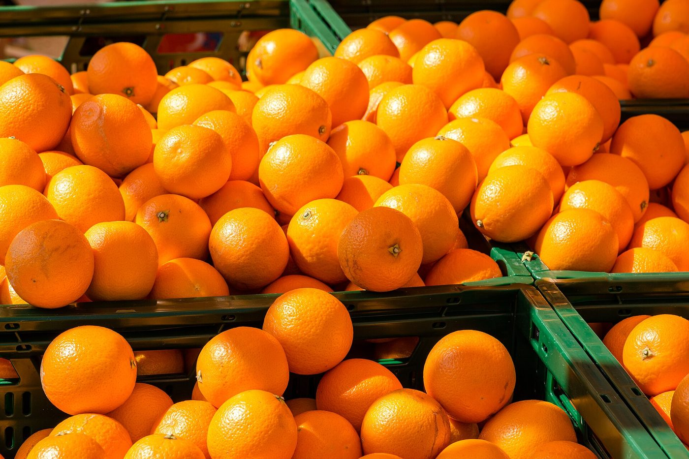
Oranges au marché, l'objet de l'évaluation sommative (« L'Orange » de Ponge). Photo : Dietmar Rabich, CC BY-SA 4.0, Wikimedia Commons.
1. Évaluation formative : quiz
Les réponses justes sont données sous chaque question, de façon à ce que la page reste entièrement lisible.
1. En quelle année paraît Le Parti pris des choses ? 1925 · 1942 · 1965
Réponse. 1942. Le recueil paraît en 1942, sous l'Occupation.
2. Dans « Le Cageot », les mots cage, cachot, cageot forment… une paronomase · une anaphore · une antithèse
Réponse. Une paronomase.
3. Quelle est la valeur de l'article dans le titre « Le Pain » ? Un pain précis, déjà connu · Une valeur générique : le pain en général · Une valeur démonstrative
Réponse. Une valeur générique : le pain en général.
4. « Mais brisons-la » joue sur… brisons-là (arrêtons) et brisons-la (cassons le pain) · une rime intérieure · une litote
Réponse. Brisons-là (arrêtons) et brisons-la (cassons le pain).
5. Quel mode domine au début des Choses ? L'impératif · Le subjonctif · Le conditionnel
Réponse. Le conditionnel.
6. Qui est le sujet du premier verbe des Choses ? Jérôme · L'œil · Le narrateur « je »
Réponse. L'œil.
7. Où se déroule la Tentative d'épuisement d'un lieu parisien ? Place Saint-Sulpice · Aux Halles · Place de l'Europe
Réponse. Place Saint-Sulpice.
8. Qu'appelle-t-on l'Oulipo ? Un mouvement surréaliste · Un groupe d'écrivains qui inventent des contraintes · Une revue de poésie engagée
Réponse. Un groupe d'écrivains qui inventent des contraintes.
9. Dans « L'Huître », « une formule perle » désigne surtout… une recette de cuisine · le poème réussi, rare et précieux · une maladie du coquillage
Réponse. Le poème réussi, rare et précieux.
10. Comment le mot « consommation » change-t-il de sens entre Ponge et Perec ? Il passe de « manger » à « acheter sans fin » · Il ne change pas · Il passe d'« acheter » à « manger »
Réponse. Il passe de « manger » à « acheter sans fin ».
2. Évaluation sommative : commentaire guidé
Sujet. Francis Ponge, « L'Orange », Le Parti pris des choses, 1942 (texte n°4). Durée : 2 heures.
Vous ferez le commentaire de ce texte en vous aidant du parcours de lecture suivant : vous montrerez d'abord comment Ponge décrit l'orange en la comparant à l'éponge, puis comment le mot « expression » fait de ce fruit une image de l'écriture poétique.
Questions d'aide (facultatives).
Comment s'ouvre le texte ? Quel objet est comparé à l'orange, et sur quel point les deux objets diffèrent-ils ?
Le mot « expression » a deux sens : lesquels ? Pourquoi est-il au centre du texte ?
Relevez le vocabulaire de la sensation (couleur, odeur, goût) et de la violence.
Sur quel élément de l'orange le texte s'achève-t-il ? Qu'en concluez-vous ?
Grille du commentaire (sur 20)
Critère
Points
Introduction : présentation de l'auteur et de l'œuvre, situation, problématique, annonce du plan
3
Partie I : analyse de la comparaison orange / éponge
4
Partie II : analyse du double sens d'« expression » et de la dimension poétique
4
Citations courtes, intégrées et analysées (procédés nommés et interprétés)
4
Conclusion : bilan et ouverture
2
Expression écrite
3
Total
20
Histoire des arts : les choses en peinture
Les peintres n'ont pas attendu Ponge pour regarder les choses. La nature morte fait de l'objet un sujet à part entière. Chaque tableau éclaire un texte de la séquence.
Gustave Caillebotte, Fruits sur un étalage, vers 1881 à 1882, huile sur toile, 76,5 × 100,6 cm, Museum of Fine Arts, Boston. Domaine public. Les fruits reposent dans des caissettes et du papier : le monde des halles où Ponge ramasse son cageot. Voir le tableau sur Wikimedia Commons.
Lien : « Le Cageot » et le monde des halles. Question : comment le peintre rend-il digne un simple étalage ?
Jean Siméon Chardin, La Pourvoyeuse, 1739, huile sur toile, 47 × 38 cm, musée du Louvre. Domaine public. Une servante revient du marché, deux gros pains posés sous le bras : le pain quotidien, peint avec le même respect qu'un visage. Voir le tableau sur Wikimedia Commons.
Lien : « Le Pain ». Question : quelle place le pain occupe-t-il dans le tableau ?
Pieter Aertsen, L'Étal de boucher, 1551, huile sur bois, North Carolina Museum of Art. Domaine public. Les marchandises envahissent tout le premier plan ; la scène sacrée est reléguée au fond, minuscule. Quatre siècles avant Perec, les choses ont déjà pris la place des hommes. Voir le tableau sur Wikimedia Commons.
Lien : Les Choses. Question : où sont les personnages ? Que dit ce renversement ?
Gustave Caillebotte, Rue de Paris, temps de pluie, 1877, huile sur toile, 212 × 276 cm, Art Institute of Chicago. Domaine public. Un carrefour, des passants, des parapluies, des pavés : rien d'extraordinaire, tout est regardé. Voir le tableau sur Wikimedia Commons.
Lien : Tentative d'épuisement d'un lieu parisien. Question : les passants se regardent-ils ?
Vilhelm Hammershøi, Intérieur, Strandgade 30, 1900, huile sur toile. Domaine public. Une pièce presque vide, une lumière grise : les lieux gardent la trace de ceux qui y ont vécu. C'est l'atmosphère de Je me souviens. Voir le tableau sur Wikimedia Commons.
Lien : Espèces d'espaces et Je me souviens. Question : que reste-t-il d'une vie dans une pièce vide ?
Lexique et citations à retenir
Lexique
Mot
Définition
Poème en prose
Poème sans vers ni rimes, organisé en paragraphes. Genre né avec Aloysius Bertrand et Baudelaire au XIXe siècle.
Définition-description
Méthode de Ponge : décrire l'objet comme un dictionnaire, mais en poète.
Objeu
Mot inventé par Ponge : l'objet devenu jeu de langage.
Inventaire
Énumération méthodique de choses, procédé central chez Perec.
Infra-ordinaire
Chez Perec, ce qui se trouve sous l'ordinaire et que l'on ne remarque plus.
Contrainte
Règle d'écriture imposée à l'avance (lipogramme, formule répétée, protocole).
Oulipo
Ouvroir de littérature potentielle, fondé en 1960 par Queneau et Le Lionnais.
Aliénation
Fait de devenir étranger à soi-même, par exemple quand ce sont les objets qui décident de nos désirs.
Société de consommation
Société où l'achat de biens devient une fin en soi (années 1960, Trente Glorieuses).
Paronomase
Rapprochement de mots aux sons proches (cage, cachot, cageot).
Calembour
Jeu de mots sur deux sens d'une même forme (brisons-là, brisons-la).
Nature morte
Genre pictural qui représente des objets inanimés.
Citations courtes à placer dans une copie
« À mi-chemin de la cage au cachot la langue française a cageot » (Ponge, « Le Cageot »).
« Mais brisons-la » (Ponge, « Le Pain »).
« C'est un monde opiniâtrement clos » (Ponge, « L'Huître »).
« L'œil, d'abord, glisserait sur la moquette grise » (Perec, Les Choses).
« Ils auraient aimé être riches » (Perec, Les Choses, chapitre 2).
« J'écris : j'habite ma feuille de papier » (Perec, Espèces d'espaces).
« Je n'ai pas de souvenirs d'enfance » (Perec, W ou le souvenir d'enfance).
Récapitulatif de la séquence
Ponge : un objet au singulier, défini par la langue ; l'objet devient paysage, monde ou leçon ; le poème imite la chose.
Perec : des objets au pluriel, inventoriés ; l'objet est un signe social, puis une mémoire commune.
Entre les deux : le mot « consommation » passe de la nourriture à l'achat. L'objet, d'abord connu, devient désiré, puis remémoré. Parler des choses, c'est toujours parler de l'homme.